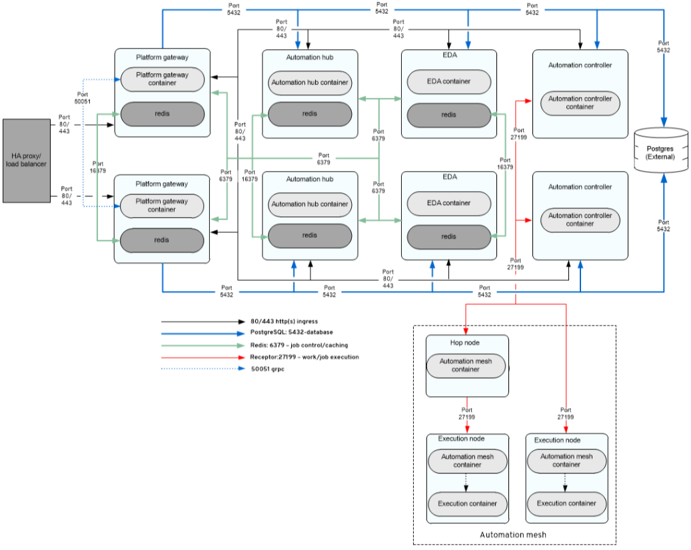
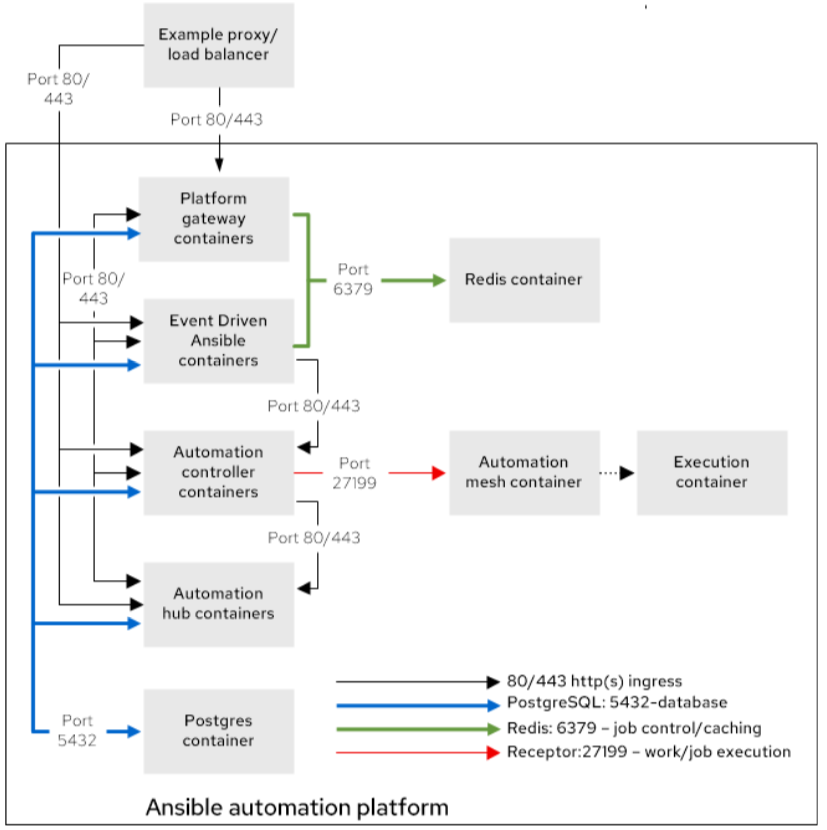

Containerized Installation
Inventory file: Inventory files allow you to manage the Ansible Automation Platform installation. Inventory files specify variables for components, hosts, and containers created and used, and additional information required for customizing the installation.
We can create an inventory file or use the inventory file provided inside the tar file provided by the Red Hat Installer of containerized Ansible Automation Platform.
Inside the Installer folder, you will have 2 different Inventory files that can be used for installation for different purposes.
-
The default one named inventory is for the enterprise topology pattern.
-
If you want to deploy the growth or all-in-one pattern you need to copy over or use the inventory-growth file instead.
Both standalone and cluster systems are quite easy to set up. If there is only one hostname listed under the component name, it is a standalone configuration; if there are several hostnames listed under the single group name, it is a cluster setup. All you need to do is add the systems under the group name of the component you wish to install.
For eg:
[automationgateway] ← This is a automationgateway group / component that will get installed
aap.example.orgThe above will be a standalone setup. Once the installation script will run it will automatically take care of that.
For cluster eg:
[automationgateway]
aap1.example.org
aap2.example.orgThe above is an example of cluster setup and there is no need to explicitly tell the script as it will take care of it automatically. This behavior is the same for different components apart from the database.
The Containerized installation offers two types of deployment topologies from which to choose:
-
Enterprise topology pattern: This means that all the components will be installed on different systems for better performance and stability. The Design of the architecture looks like the one below where each component is installed on different servers and the drawn lines show how the components are interacting with each other and on which port the communication is happening.
Enterprise topology is appropriate for infrastructure that needs:
-
Lightweight deployment, smaller footprints.
-
Suitable for scaling or adding mesh.
-
Designed for deployment with redundancy/HA or higher computing for big volumes of automation.
The benefits of using this topology:
-
Protected from the underlying OS changes and system dependencies.
-
Isolated from other applications and are more secure.
-
Simplified upgrades
-
-
All-in-one pattern: In this, we will be installing all the components in a single system to create a testing environment or POC to understand the working. In this, we are going to do All-in-one pattern deployment.
The above will be deployed on a single system itself where 8433 will be the port for the Unified UI to be accessed.
All-in-one pattern is suitable for infrastructure according to the below needs:
-
Intended for organizations that are getting started with Ansible Automation Platform.
-
All-in-one deployment on a single system reduces infrastructure costs.
-
Not ideal for scaling or adding mesh.
-
Suitable for small test environments.
The benefits of using this topology:
-
Protected from the underlying OS changes and system dependencies.
-
Easy to Deploy and manage.
-